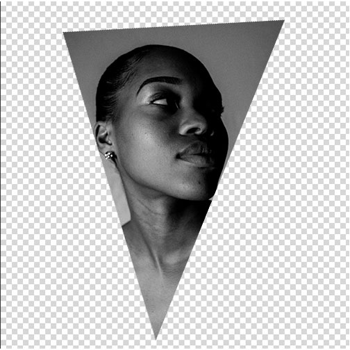

Intro.
I remember using Photoshop for the first time. I had no idea the best place to start, or even how to start. But I've made it through the fire and I'm here to help light the way for you. Whether you're new to Photoshop or not,
The

